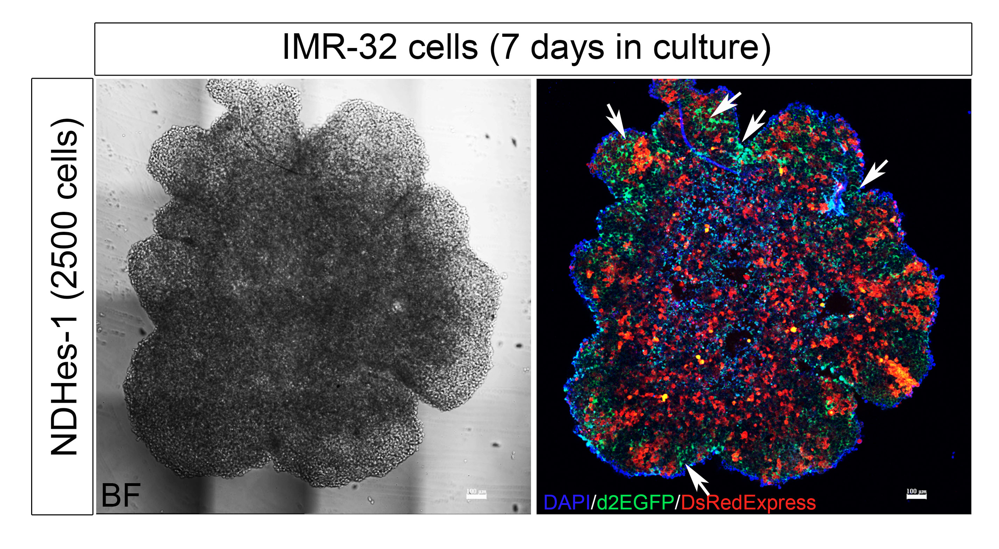
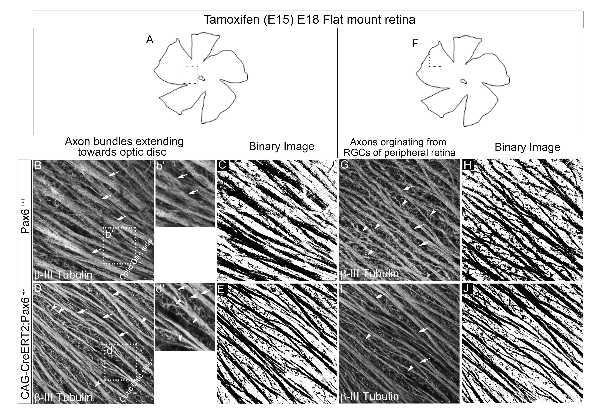

Research
HES1 promoter activation dynamics reveal the plasticity,stemness and heterogeneity in neuroblastoma cancer stem cells
Riya et al.
Journal of Cell Science
Volume 135, Issue 22
November, 2022
Abstract
Notch signaling and its downstream gene target HES1 play a critical role in regulating and maintaining cancer stem cells (CSCs), similar to as they do during embryonic development. Here, we report a unique subclass of Notch-independent Hes-1 (NIHes-1)-expressing CSCs in neuroblastoma. These CSCs maintain sustained HES1 expression by activation of HES1 promoter region upstream of classical CBF-1 binding sites, thereby completely bypassing Notch receptor-mediated activation. These stem cells have self-renewal ability and potential to generate tumors. Interestingly, we observed that NIHes-1 CSCs could transition to Notch-dependent Hes-1-expressing (NDHes-1) CSCs where HES1 is expressed by Notch receptor-mediated promoter activation. We observed that NDHes-1-expressing CSCs also had the potential to transition to NIHes-1 CSCs and during this coordinated bidirectional transition, both CSCs gave rise to the majority of the bulk cancer cells, which had an inactive HES1 promoter (PIHes-1). A few of these PIHes-1 cells were capable of reverting into a CSC state. These findings explain the existence of a heterogenic mode of HES1 promoter activation within the IMR-32 neuroblastoma cell line and the potential to switch between them.
Pax6 modulates intra-retinal axon guidance and fasciculation of retinal ganglion cells during retinogenesis
Lalitha et al.
Scientific Reports
Volume 10, Issue 1
September, 2020
Abstract

Intra-retinal axon guidance involves a coordinated expression of transcription factors, axon guidance genes, and secretory molecules within the retina. Pax6, the master regulator gene, has a spatio-temporal expression typically restricted till neurogenesis and fate-specification. However, our observation of persistent expression of Pax6 in mature RGCs led us to hypothesize that Pax6 could play a major role in axon guidance after fate specification. Here, we found significant alteration in intra-retinal axon guidance and fasciculation upon knocking out of Pax6 in E15.5 retina. Through unbiased transcriptome profiling between Pax6fl/fl and Pax6−/− retinas, we revealed the mechanistic insight of its role in axon guidance. Our results showed a significant increase in the expression of extracellular matrix molecules and decreased expression of retinal fate specification and neuron projection guidance molecules. Additionally, we found that EphB1 and Sema5B are directly regulated by Pax6 owing to the guidance defects and improper fasciculation of axons. We conclude that Pax6 expression post fate specification of RGCs is necessary for regulating the expression of axon guidance genes and most importantly for maintaining a conducive ECM through which the nascent axons get guided and fasciculate to reach the optic disc.